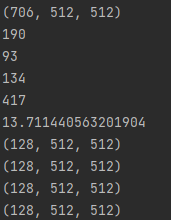

<!DOCTYPE html>


<html lang="en">
  

    <head>
      <meta charset="utf-8" />
        
      <meta
        name="viewport"
        content="width=device-width, initial-scale=1, maximum-scale=1"
      />
      <title>RSNA 2023 腹部创伤检测 分类数据集预处理 |  Scorpio-yyz</title>
  <meta name="generator" content="hexo-theme-ayer">
      
      <link rel="shortcut icon" href="/favicon.ico" />
       
<link rel="stylesheet" href="/dist/main.css">

      <link
        rel="stylesheet"
        href="https://cdn.jsdelivr.net/gh/Shen-Yu/cdn/css/remixicon.min.css"
      />
      
<link rel="stylesheet" href="/css/custom.css">
 
      <script src="https://cdn.jsdelivr.net/npm/pace-js@1.0.2/pace.min.js"></script>
       
 

      <link
        rel="stylesheet"
        href="https://cdn.jsdelivr.net/npm/@sweetalert2/theme-bulma@5.0.1/bulma.min.css"
      />
      <script src="https://cdn.jsdelivr.net/npm/sweetalert2@11.0.19/dist/sweetalert2.min.js"></script>

      <!-- mermaid -->
      
      <style>
        .swal2-styled.swal2-confirm {
          font-size: 1.6rem;
        }
      </style>
    </head>
  </html>
</html>


<body>
  <div id="app">
    
      <canvas class="fireworks"></canvas>
      <style>
        .fireworks {
          position: fixed;
          left: 0;
          top: 0;
          z-index: 99999;
          pointer-events: none;
        }
      </style>
      
      
    <main class="content on">
      <section class="outer">
  <article
  id="post-RSNA-2023-腹部创伤检测-分类数据集预处理"
  class="article article-type-post"
  itemscope
  itemprop="blogPost"
  data-scroll-reveal
>
  <div class="article-inner">
    
    <header class="article-header">
       
<h1 class="article-title sea-center" style="border-left:0" itemprop="name">
  RSNA 2023 腹部创伤检测 分类数据集预处理
</h1>
 

      
    </header>
     
    <div class="article-meta">
      <a href="/2023/09/28/RSNA-2023-%E8%85%B9%E9%83%A8%E5%88%9B%E4%BC%A4%E6%A3%80%E6%B5%8B-%E5%88%86%E7%B1%BB%E6%95%B0%E6%8D%AE%E9%9B%86%E9%A2%84%E5%A4%84%E7%90%86/" class="article-date">
  <time datetime="2023-09-28T05:43:51.000Z" itemprop="datePublished">2023-09-28</time>
</a> 
  <div class="article-category">
    <a class="article-category-link" href="/categories/Kaggle/">Kaggle</a>
  </div>
  
<div class="word_count">
    <span class="post-time">
        <span class="post-meta-item-icon">
            <i class="ri-quill-pen-line"></i>
            <span class="post-meta-item-text"> Word count:</span>
            <span class="post-count">1.1k</span>
        </span>
    </span>

    <span class="post-time">
        &nbsp; | &nbsp;
        <span class="post-meta-item-icon">
            <i class="ri-book-open-line"></i>
            <span class="post-meta-item-text"> Reading time≈</span>
            <span class="post-count">4 min</span>
        </span>
    </span>
</div>
 
    </div>
      
    <div class="tocbot"></div>


  
    <div class="article-entry" itemprop="articleBody">
       
  <h1 id="RSNA-2023-腹部创伤检测-分类数据集预处理"><a href="#RSNA-2023-腹部创伤检测-分类数据集预处理" class="headerlink" title="RSNA 2023 腹部创伤检测 分类数据集预处理"></a>RSNA 2023 腹部创伤检测 分类数据集预处理</h1><p>对于一个患者的CT系列图像，我们往往只需要腹部CT图像即可，因此，为了减少数据的输入规模和筛选有用的CT切片。我们需要进行器官分割，得到至少含有肝、脾、肾、肠的CT切片。</p>
<p>器官分割的代码参考的：<a target="_blank" rel="noopener" href="https://www.kaggle.com/code/enriquezaf/poc-segmentator-with-relative-low-execution-time">PoC Segmentator with relative low execution time. | Kaggle</a></p>
<p>读取dcm系列文件，得到分割mask</p>
<figure class="highlight python"><table><tr><td class="gutter"><pre><span class="line">1</span><br><span class="line">2</span><br><span class="line">3</span><br><span class="line">4</span><br><span class="line">5</span><br><span class="line">6</span><br><span class="line">7</span><br><span class="line">8</span><br><span class="line">9</span><br><span class="line">10</span><br><span class="line">11</span><br><span class="line">12</span><br><span class="line">13</span><br><span class="line">14</span><br><span class="line">15</span><br><span class="line">16</span><br></pre></td><td class="code"><pre><span class="line"><span class="keyword">import</span> os</span><br><span class="line"><span class="keyword">import</span> numpy <span class="keyword">as</span> np</span><br><span class="line"><span class="keyword">from</span> infer <span class="keyword">import</span> volume_and_seg</span><br><span class="line">count = <span class="built_in">len</span>(os.listdir(path))</span><br><span class="line"><span class="comment"># T1 = time.time()</span></span><br><span class="line">dicom_list, seg, _ = volume_and_seg(path, channels=count, clear_mempool=<span class="literal">True</span>, cuda=<span class="number">1</span>)</span><br><span class="line"><span class="comment"># T2 = time.time()</span></span><br><span class="line"><span class="comment"># print(T2 - T1)</span></span><br><span class="line"><span class="comment">#分割时间大概是1000张CT切片在15s以内</span></span><br><span class="line">dicom_array = np.zeros((seg.shape[<span class="number">0</span>], <span class="number">512</span>, <span class="number">512</span>))</span><br><span class="line"><span class="comment">#这里的dicom_array序列号与seg是相反的，图像也是旋转180度后，需要做一些处理与seg的mask对应</span></span><br><span class="line"><span class="keyword">for</span> i <span class="keyword">in</span> <span class="built_in">range</span>(seg.shape[<span class="number">0</span>]):</span><br><span class="line">    dicom_array[i] = np.array(dicom_list[seg.shape[<span class="number">0</span>] - <span class="number">1</span> - i].pixel_array)</span><br><span class="line">    <span class="comment">#dicom_list[i].pixel_array是返回dcm的像素值信息，其他信息则不需要</span></span><br><span class="line">    dicom_array[i] = cv2.rotate(dicom_array[i], cv2.ROTATE_180)</span><br><span class="line"><span class="comment">#print(np.shape(dicom_array)) </span></span><br></pre></td></tr></table></figure>

<p>读取到了dcm_array和seg_mask后，需要将mask里各个器官对应的切片分开。</p>
<figure class="highlight python"><table><tr><td class="gutter"><pre><span class="line">1</span><br><span class="line">2</span><br><span class="line">3</span><br><span class="line">4</span><br><span class="line">5</span><br><span class="line">6</span><br><span class="line">7</span><br><span class="line">8</span><br><span class="line">9</span><br></pre></td><td class="code"><pre><span class="line">liver = np.zeros_like(seg, dtype=np.int32)</span><br><span class="line">spleen = np.zeros_like(seg, dtype=np.int32)</span><br><span class="line">kidney = np.zeros_like(seg, dtype=np.int32)</span><br><span class="line">bowel = np.zeros_like(seg, dtype=np.int32)</span><br><span class="line">liver[seg == <span class="number">1</span>] = <span class="number">1</span></span><br><span class="line">spleen[seg == <span class="number">2</span>] = <span class="number">1</span></span><br><span class="line">kidney[seg == <span class="number">3</span>] = <span class="number">1</span></span><br><span class="line">kidney[seg == <span class="number">4</span>] = <span class="number">1</span></span><br><span class="line">bowel[seg == <span class="number">5</span>] = <span class="number">1</span></span><br></pre></td></tr></table></figure>

<p>这样，每个器官对应的mask就被分开了，接下来需要筛选一下，如果对应器官对应的区域过小则丢弃，这一步是筛除错误分割结果和无价值的CT图。</p>
<figure class="highlight python"><table><tr><td class="gutter"><pre><span class="line">1</span><br><span class="line">2</span><br><span class="line">3</span><br><span class="line">4</span><br><span class="line">5</span><br><span class="line">6</span><br><span class="line">7</span><br><span class="line">8</span><br><span class="line">9</span><br><span class="line">10</span><br><span class="line">11</span><br><span class="line">12</span><br></pre></td><td class="code"><pre><span class="line"><span class="function"><span class="keyword">def</span> <span class="title">set_zero_if_less</span>(<span class="params">matrix, count</span>):</span></span><br><span class="line">    <span class="keyword">for</span> i <span class="keyword">in</span> <span class="built_in">range</span>(matrix.shape[<span class="number">0</span>]):</span><br><span class="line">        channel = matrix[i]</span><br><span class="line">        <span class="keyword">if</span> np.<span class="built_in">sum</span>(channel == <span class="number">1</span>) &lt; count:</span><br><span class="line">            <span class="comment">#如果等于1的像素个数少于一个值，则认为可能是分类错误或无价值</span></span><br><span class="line">            matrix[i] = <span class="number">0</span></span><br><span class="line">    <span class="keyword">return</span> matrix</span><br><span class="line">liver = set_zero_if_less(liver, <span class="number">400</span>)</span><br><span class="line">spleen = set_zero_if_less(spleen, <span class="number">90</span>)</span><br><span class="line"><span class="comment">#脾脏比较小，所以阈值设低一点</span></span><br><span class="line">kidney = set_zero_if_less(kidney, <span class="number">400</span>)</span><br><span class="line">bowel = set_zero_if_less(bowel, <span class="number">400</span>)</span><br></pre></td></tr></table></figure>

<p>然后，生成有用图像相对应的序列，将无用的CT图像筛除。</p>
<figure class="highlight python"><table><tr><td class="gutter"><pre><span class="line">1</span><br><span class="line">2</span><br><span class="line">3</span><br><span class="line">4</span><br><span class="line">5</span><br><span class="line">6</span><br><span class="line">7</span><br><span class="line">8</span><br><span class="line">9</span><br><span class="line">10</span><br><span class="line">11</span><br></pre></td><td class="code"><pre><span class="line"><span class="function"><span class="keyword">def</span> <span class="title">genernate_idx</span>(<span class="params">martix</span>):</span></span><br><span class="line">    martix_idx = []</span><br><span class="line">    <span class="keyword">for</span> i <span class="keyword">in</span> <span class="built_in">range</span>(martix.shape[<span class="number">0</span>]):</span><br><span class="line">        <span class="keyword">if</span> (martix[i] == <span class="number">1</span>).<span class="built_in">any</span>() == <span class="literal">True</span>:</span><br><span class="line">            <span class="comment">#如果这个分割mask里含有1，即对应CT图有该器官，则将图像序列保存下来。</span></span><br><span class="line">            martix_idx.append(i)</span><br><span class="line">    <span class="keyword">return</span> martix_idx</span><br><span class="line">liver_idx = genernate_idx(liver)</span><br><span class="line">spleen_idx = genernate_idx(spleen)</span><br><span class="line">kidney_idx = genernate_idx(kidney)</span><br><span class="line">bowel_idx = genernate_idx(bowel)</span><br></pre></td></tr></table></figure>

<p>将对应的有用CT图像与分割mask提取出来，并且通过随机删除或复制，得到（128，512，512）的输入</p>
<figure class="highlight python"><table><tr><td class="gutter"><pre><span class="line">1</span><br><span class="line">2</span><br><span class="line">3</span><br><span class="line">4</span><br><span class="line">5</span><br><span class="line">6</span><br><span class="line">7</span><br><span class="line">8</span><br><span class="line">9</span><br><span class="line">10</span><br><span class="line">11</span><br><span class="line">12</span><br><span class="line">13</span><br><span class="line">14</span><br><span class="line">15</span><br><span class="line">16</span><br><span class="line">17</span><br><span class="line">18</span><br><span class="line">19</span><br><span class="line">20</span><br><span class="line">21</span><br><span class="line">22</span><br><span class="line">23</span><br><span class="line">24</span><br><span class="line">25</span><br><span class="line">26</span><br><span class="line">27</span><br><span class="line">28</span><br><span class="line">29</span><br><span class="line">30</span><br><span class="line">31</span><br><span class="line">32</span><br><span class="line">33</span><br><span class="line">34</span><br><span class="line">35</span><br></pre></td><td class="code"><pre><span class="line"><span class="function"><span class="keyword">def</span> <span class="title">matrix_idx</span>(<span class="params">matrix , idx_list</span>):</span></span><br><span class="line">    result = []</span><br><span class="line">    <span class="keyword">for</span> i <span class="keyword">in</span> <span class="built_in">range</span>(<span class="built_in">len</span>(idx_list)):</span><br><span class="line">        <span class="comment"># print(idx_list[i])</span></span><br><span class="line">        result.append(matrix[idx_list[i]])</span><br><span class="line">        <span class="comment">#按照上面得到的索引，筛选出有用的切片</span></span><br><span class="line">    <span class="keyword">return</span> np.array(result)</span><br><span class="line"><span class="function"><span class="keyword">def</span> <span class="title">transform_matrix</span>(<span class="params">matrix1, matrix2</span>):</span></span><br><span class="line">    C, W, H = matrix1.shape</span><br><span class="line">    <span class="keyword">if</span> C &gt;= <span class="number">128</span>:</span><br><span class="line">        keep_channels = np.random.choice(<span class="built_in">range</span>(C), size=<span class="number">128</span>, replace=<span class="literal">False</span>)</span><br><span class="line">        <span class="comment">#如果切片数大于128，随机选择到128个切片</span></span><br><span class="line">    <span class="keyword">else</span>:</span><br><span class="line">        keep_channels = np.random.choice(<span class="built_in">range</span>(C), size=<span class="number">128</span>, replace=<span class="literal">True</span>)</span><br><span class="line">        <span class="comment">#如果切片数小于128，随机复制到128个切片</span></span><br><span class="line">    new_matrix1 = matrix1[keep_channels]</span><br><span class="line">    new_matrix2 = matrix2[keep_channels]</span><br><span class="line">    new_matrix2 = new_matrix2.repeat(<span class="number">2</span>, axis=<span class="number">1</span>).repeat(<span class="number">2</span>, axis=<span class="number">2</span>)</span><br><span class="line">    <span class="keyword">return</span> new_matrix1, new_matrix2</span><br><span class="line"></span><br><span class="line">liver_mask = matrix_idx(liver, liver_idx)</span><br><span class="line">liver_dcm = matrix_idx(dicom_array, liver_idx)</span><br><span class="line">liver_dcm, liver_mask = transform_matrix(liver_dcm, liver_mask)</span><br><span class="line"></span><br><span class="line">spleen_mask = matrix_idx(liver, spleen_idx)</span><br><span class="line">spleen_dcm = matrix_idx(dicom_array, spleen_idx)</span><br><span class="line">spleen_dcm, spleen_mask = transform_matrix(spleen_dcm, spleen_mask)</span><br><span class="line"></span><br><span class="line">kidney_mask = matrix_idx(kidney, kidney_idx)</span><br><span class="line">kidney_dcm = matrix_idx(dicom_array, kidney_idx)</span><br><span class="line">kidney_dcm, kidney_mask = transform_matrix(kidney_dcm, kidney_mask)</span><br><span class="line"></span><br><span class="line">bowel_mask = matrix_idx(bowel, bowel_idx)</span><br><span class="line">bowel_dcm = matrix_idx(dicom_array, bowel_idx)</span><br><span class="line">bowel_dcm, bowel_mask = transform_matrix(bowel_dcm, bowel_mask)</span><br></pre></td></tr></table></figure>

<p>最终结果：</p>
<p></p>
<p>读取该病人706张切片，其中肝有190张切片，脾有93张切片，肾有134张切片，肠有417张切片（大肠相对于其他器官数量过多了，随机筛选到128张切片，是否会丢失有用的信息？？）</p>
<p>整个预处理部分耗时13.7s，显卡为RTX3090Ti。</p>
<p>注：优化了切片筛选的代码，若切片数大于128的两倍，则先融合再随机丢弃，减少信息损失</p>
<figure class="highlight python"><table><tr><td class="gutter"><pre><span class="line">1</span><br><span class="line">2</span><br><span class="line">3</span><br><span class="line">4</span><br><span class="line">5</span><br><span class="line">6</span><br><span class="line">7</span><br><span class="line">8</span><br><span class="line">9</span><br><span class="line">10</span><br><span class="line">11</span><br><span class="line">12</span><br><span class="line">13</span><br><span class="line">14</span><br><span class="line">15</span><br><span class="line">16</span><br><span class="line">17</span><br><span class="line">18</span><br><span class="line">19</span><br><span class="line">20</span><br></pre></td><td class="code"><pre><span class="line"><span class="function"><span class="keyword">def</span> <span class="title">transform_matrix</span>(<span class="params">matrix1, matrix2</span>):</span></span><br><span class="line">    C, W, H = matrix1.shape</span><br><span class="line">    <span class="keyword">if</span> C &gt;= <span class="number">128</span>:</span><br><span class="line">        <span class="keyword">while</span> C &gt;= <span class="number">2</span> * <span class="number">128</span>:</span><br><span class="line">            new_matrix1 = np.zeros((C // <span class="number">2</span>, matrix1.shape[<span class="number">1</span>], matrix1.shape[<span class="number">2</span>])) </span><br><span class="line">            new_matrix2 = np.zeros((C // <span class="number">2</span>, matrix2.shape[<span class="number">1</span>], matrix2.shape[<span class="number">2</span>]))</span><br><span class="line">            <span class="keyword">for</span> i <span class="keyword">in</span> <span class="built_in">range</span>(C // <span class="number">2</span>):</span><br><span class="line">                new_matrix1[i] = (matrix1[<span class="number">2</span> * i] + matrix1[<span class="number">2</span> * i + <span class="number">1</span>]) / <span class="number">2</span>  <span class="comment"># 两两求平均</span></span><br><span class="line">                new_matrix2[i] = np.logical_or(matrix2[<span class="number">2</span> * i], matrix2[<span class="number">2</span> * i + <span class="number">1</span>])  <span class="comment"># 两两求并集</span></span><br><span class="line">            matrix1 = new_matrix1  <span class="comment"># 更新矩阵</span></span><br><span class="line">            matrix2 = new_matrix2</span><br><span class="line">            C = matrix1.shape[<span class="number">0</span>]  <span class="comment"># 更新C通道数</span></span><br><span class="line">        keep_channels = np.random.choice(<span class="built_in">range</span>(C), size=<span class="number">128</span>, replace=<span class="literal">False</span>)</span><br><span class="line">        <span class="comment">#优化后，最好的结果是，C是128的整数倍，只需要融合不需要丢弃，最差结果也仅是丢弃127张，保留128张。</span></span><br><span class="line">    <span class="keyword">else</span>:</span><br><span class="line">        keep_channels = np.random.choice(<span class="built_in">range</span>(C), size=<span class="number">128</span>, replace=<span class="literal">True</span>)</span><br><span class="line">    new_matrix1 = matrix1[keep_channels]</span><br><span class="line">    new_matrix2 = matrix2[keep_channels]</span><br><span class="line">    new_matrix2 = new_matrix2.repeat(<span class="number">2</span>, axis=<span class="number">1</span>).repeat(<span class="number">2</span>, axis=<span class="number">2</span>)</span><br><span class="line">    <span class="keyword">return</span> new_matrix1, new_matrix2</span><br></pre></td></tr></table></figure>

 
      <!-- reward -->
      
    </div>
    

    <!-- copyright -->
    
    <div class="declare">
      <ul class="post-copyright">
        <li>
          <i class="ri-copyright-line"></i>
          <strong>Copyright： </strong>
          
          Copyright is owned by the author. For commercial reprints, please contact the author for authorization. For non-commercial reprints, please indicate the source.
          
        </li>
      </ul>
    </div>
    
    <footer class="article-footer">
       
<div class="share-btn">
      <span class="share-sns share-outer">
        <i class="ri-share-forward-line"></i>
        分享
      </span>
      <div class="share-wrap">
        <i class="arrow"></i>
        <div class="share-icons">
          
          <a class="weibo share-sns" href="javascript:;" data-type="weibo">
            <i class="ri-weibo-fill"></i>
          </a>
          <a class="weixin share-sns wxFab" href="javascript:;" data-type="weixin">
            <i class="ri-wechat-fill"></i>
          </a>
          <a class="qq share-sns" href="javascript:;" data-type="qq">
            <i class="ri-qq-fill"></i>
          </a>
          <a class="douban share-sns" href="javascript:;" data-type="douban">
            <i class="ri-douban-line"></i>
          </a>
          <!-- <a class="qzone share-sns" href="javascript:;" data-type="qzone">
            <i class="icon icon-qzone"></i>
          </a> -->
          
          <a class="facebook share-sns" href="javascript:;" data-type="facebook">
            <i class="ri-facebook-circle-fill"></i>
          </a>
          <a class="twitter share-sns" href="javascript:;" data-type="twitter">
            <i class="ri-twitter-fill"></i>
          </a>
          <a class="google share-sns" href="javascript:;" data-type="google">
            <i class="ri-google-fill"></i>
          </a>
        </div>
      </div>
</div>

<div class="wx-share-modal">
    <a class="modal-close" href="javascript:;"><i class="ri-close-circle-line"></i></a>
    <p>扫一扫，分享到微信</p>
    <div class="wx-qrcode">
      
    </div>
</div>

<div id="share-mask"></div>  
    </footer>
  </div>

   
  <nav class="article-nav">
    
    
      <a href="/2023/09/22/RSNA%202023%20%E8%85%B9%E9%83%A8%E5%88%9B%E4%BC%A4%E6%A3%80%E6%B5%8B%20%E5%88%86%E5%89%B2%E6%95%B0%E6%8D%AE%E9%9B%86%E9%A2%84%E5%A4%84%E7%90%86%E9%83%A8%E5%88%86/" class="article-nav-link">
        <strong class="article-nav-caption">下一篇</strong>
        <div class="article-nav-title">RSNA 2023 腹部创伤检测 分割数据集预处理部分</div>
      </a>
    
  </nav>

   
 
   
     
</article>

</section>
      <footer class="footer">
  <div class="outer">
    <ul>
      <li>
        Copyrights &copy;
        2020-2023
        <i class="ri-heart-fill heart_icon"></i> YYz
      </li>
    </ul>
    <ul>
      <li>
        
      </li>
    </ul>
    <ul>
      <li>
        
        
        <span>
  <span><i class="ri-user-3-fill"></i>Visitors:<span id="busuanzi_value_site_uv"></span></span>
  <span class="division">|</span>
  <span><i class="ri-eye-fill"></i>Views:<span id="busuanzi_value_page_pv"></span></span>
</span>
        
      </li>
    </ul>
    <ul>
      
    </ul>
    <ul>
      
    </ul>
    <ul>
      <li>
        <!-- cnzz统计 -->
        
      </li>
    </ul>
  </div>
</footer>    
    </main>
    <div class="float_btns">
      <div class="totop" id="totop">
  <i class="ri-arrow-up-line"></i>
</div>

<div class="todark" id="todark">
  <i class="ri-moon-line"></i>
</div>

    </div>
    <aside class="sidebar on">
      <button class="navbar-toggle"></button>
<nav class="navbar">
  
  <div class="logo">
    <a href="/"></a>
  </div>
  
  <ul class="nav nav-main">
    
    <li class="nav-item">
      <a class="nav-item-link" href="/">主页</a>
    </li>
    
    <li class="nav-item">
      <a class="nav-item-link" href="/archives">归档</a>
    </li>
    
    <li class="nav-item">
      <a class="nav-item-link" href="/categories">分类</a>
    </li>
    
    <li class="nav-item">
      <a class="nav-item-link" href="/friends">友链</a>
    </li>
    
  </ul>
</nav>
<nav class="navbar navbar-bottom">
  <ul class="nav">
    <li class="nav-item">
      
      <a class="nav-item-link nav-item-search"  title="Search">
        <i class="ri-search-line"></i>
      </a>
      
      
    </li>
  </ul>
</nav>
<div class="search-form-wrap">
  <div class="local-search local-search-plugin">
  <input type="search" id="local-search-input" class="local-search-input" placeholder="Search...">
  <div id="local-search-result" class="local-search-result"></div>
</div>
</div>
    </aside>
    <div id="mask"></div>

<!-- #reward -->
<div id="reward">
  <span class="close"><i class="ri-close-line"></i></span>
  <p class="reward-p"><i class="ri-cup-line"></i>请我喝杯咖啡吧~</p>
  <div class="reward-box">
    
    <div class="reward-item">
      
      <span class="reward-type">支付宝</span>
    </div>
    
    
    <div class="reward-item">
      
      <span class="reward-type">微信</span>
    </div>
    
  </div>
</div>
    
<script src="/js/jquery-3.6.0.min.js"></script>
 
<script src="/js/lazyload.min.js"></script>

<!-- Tocbot -->
 
<script src="/js/tocbot.min.js"></script>

<script>
  tocbot.init({
    tocSelector: ".tocbot",
    contentSelector: ".article-entry",
    headingSelector: "h1, h2, h3, h4, h5, h6",
    hasInnerContainers: true,
    scrollSmooth: true,
    scrollContainer: "main",
    positionFixedSelector: ".tocbot",
    positionFixedClass: "is-position-fixed",
    fixedSidebarOffset: "auto",
  });
</script>

<script src="https://cdn.jsdelivr.net/npm/jquery-modal@0.9.2/jquery.modal.min.js"></script>
<link
  rel="stylesheet"
  href="https://cdn.jsdelivr.net/npm/jquery-modal@0.9.2/jquery.modal.min.css"
/>
<script src="https://cdn.jsdelivr.net/npm/justifiedGallery@3.7.0/dist/js/jquery.justifiedGallery.min.js"></script>

<script src="/dist/main.js"></script>

<!-- ImageViewer -->
 <!-- Root element of PhotoSwipe. Must have class pswp. -->
<div class="pswp" tabindex="-1" role="dialog" aria-hidden="true">

    <!-- Background of PhotoSwipe. 
         It's a separate element as animating opacity is faster than rgba(). -->
    <div class="pswp__bg"></div>

    <!-- Slides wrapper with overflow:hidden. -->
    <div class="pswp__scroll-wrap">

        <!-- Container that holds slides. 
            PhotoSwipe keeps only 3 of them in the DOM to save memory.
            Don't modify these 3 pswp__item elements, data is added later on. -->
        <div class="pswp__container">
            <div class="pswp__item"></div>
            <div class="pswp__item"></div>
            <div class="pswp__item"></div>
        </div>

        <!-- Default (PhotoSwipeUI_Default) interface on top of sliding area. Can be changed. -->
        <div class="pswp__ui pswp__ui--hidden">

            <div class="pswp__top-bar">

                <!--  Controls are self-explanatory. Order can be changed. -->

                <div class="pswp__counter"></div>

                <button class="pswp__button pswp__button--close" title="Close (Esc)"></button>

                <button class="pswp__button pswp__button--share" style="display:none" title="Share"></button>

                <button class="pswp__button pswp__button--fs" title="Toggle fullscreen"></button>

                <button class="pswp__button pswp__button--zoom" title="Zoom in/out"></button>

                <!-- Preloader demo http://codepen.io/dimsemenov/pen/yyBWoR -->
                <!-- element will get class pswp__preloader--active when preloader is running -->
                <div class="pswp__preloader">
                    <div class="pswp__preloader__icn">
                        <div class="pswp__preloader__cut">
                            <div class="pswp__preloader__donut"></div>
                        </div>
                    </div>
                </div>
            </div>

            <div class="pswp__share-modal pswp__share-modal--hidden pswp__single-tap">
                <div class="pswp__share-tooltip"></div>
            </div>

            <button class="pswp__button pswp__button--arrow--left" title="Previous (arrow left)">
            </button>

            <button class="pswp__button pswp__button--arrow--right" title="Next (arrow right)">
            </button>

            <div class="pswp__caption">
                <div class="pswp__caption__center"></div>
            </div>

        </div>

    </div>

</div>

<link rel="stylesheet" href="https://cdn.jsdelivr.net/npm/photoswipe@4.1.3/dist/photoswipe.min.css">
<link rel="stylesheet" href="https://cdn.jsdelivr.net/npm/photoswipe@4.1.3/dist/default-skin/default-skin.min.css">
<script src="https://cdn.jsdelivr.net/npm/photoswipe@4.1.3/dist/photoswipe.min.js"></script>
<script src="https://cdn.jsdelivr.net/npm/photoswipe@4.1.3/dist/photoswipe-ui-default.min.js"></script>

<script>
    function viewer_init() {
        let pswpElement = document.querySelectorAll('.pswp')[0];
        let $imgArr = document.querySelectorAll(('.article-entry img:not(.reward-img)'))

        $imgArr.forEach(($em, i) => {
            $em.onclick = () => {
                // slider展开状态
                // todo: 这样不好，后面改成状态
                if (document.querySelector('.left-col.show')) return
                let items = []
                $imgArr.forEach(($em2, i2) => {
                    let img = $em2.getAttribute('data-idx', i2)
                    let src = $em2.getAttribute('data-target') || $em2.getAttribute('src')
                    let title = $em2.getAttribute('alt')
                    // 获得原图尺寸
                    const image = new Image()
                    image.src = src
                    items.push({
                        src: src,
                        w: image.width || $em2.width,
                        h: image.height || $em2.height,
                        title: title
                    })
                })
                var gallery = new PhotoSwipe(pswpElement, PhotoSwipeUI_Default, items, {
                    index: parseInt(i)
                });
                gallery.init()
            }
        })
    }
    viewer_init()
</script> 
<!-- MathJax -->

<!-- Katex -->

<!-- busuanzi  -->
 
<script src="/js/busuanzi-2.3.pure.min.js"></script>
 
<!-- ClickLove -->

<!-- ClickBoom1 -->

<script src="https://cdn.jsdelivr.net/npm/animejs@latest/anime.min.js"></script>

<script src="/js/clickBoom1.js"></script>
 
<!-- ClickBoom2 -->

<!-- CodeCopy -->
 
<link rel="stylesheet" href="/css/clipboard.css">
 <script src="https://cdn.jsdelivr.net/npm/clipboard@2/dist/clipboard.min.js"></script>
<script>
  function wait(callback, seconds) {
    var timelag = null;
    timelag = window.setTimeout(callback, seconds);
  }
  !function (e, t, a) {
    var initCopyCode = function(){
      var copyHtml = '';
      copyHtml += '<button class="btn-copy" data-clipboard-snippet="">';
      copyHtml += '<i class="ri-file-copy-2-line"></i><span>COPY</span>';
      copyHtml += '</button>';
      $(".highlight .code pre").before(copyHtml);
      $(".article pre code").before(copyHtml);
      var clipboard = new ClipboardJS('.btn-copy', {
        target: function(trigger) {
          return trigger.nextElementSibling;
        }
      });
      clipboard.on('success', function(e) {
        let $btn = $(e.trigger);
        $btn.addClass('copied');
        let $icon = $($btn.find('i'));
        $icon.removeClass('ri-file-copy-2-line');
        $icon.addClass('ri-checkbox-circle-line');
        let $span = $($btn.find('span'));
        $span[0].innerText = 'COPIED';
        
        wait(function () { // 等待两秒钟后恢复
          $icon.removeClass('ri-checkbox-circle-line');
          $icon.addClass('ri-file-copy-2-line');
          $span[0].innerText = 'COPY';
        }, 2000);
      });
      clipboard.on('error', function(e) {
        e.clearSelection();
        let $btn = $(e.trigger);
        $btn.addClass('copy-failed');
        let $icon = $($btn.find('i'));
        $icon.removeClass('ri-file-copy-2-line');
        $icon.addClass('ri-time-line');
        let $span = $($btn.find('span'));
        $span[0].innerText = 'COPY FAILED';
        
        wait(function () { // 等待两秒钟后恢复
          $icon.removeClass('ri-time-line');
          $icon.addClass('ri-file-copy-2-line');
          $span[0].innerText = 'COPY';
        }, 2000);
      });
    }
    initCopyCode();
  }(window, document);
</script>
 
<!-- CanvasBackground -->
 
<script src="/js/dz.js"></script>
 
<script>
  if (window.mermaid) {
    mermaid.initialize({ theme: "forest" });
  }
</script>


    
    

  </div>
</body>

</html>